JEE Main 2024 (Session 2), 8 Apr Shift 1: worked solutions for review
Questions and options are NTA’s own images; the green option is NTA’s final key. Every solution below was written by Claude
and checked against NTA’s final key. It is not NTA’s solution. Please mark anything unclear or wrong.
Q1 · Mathematics · MCQ · ID 68019114334
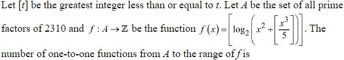
(1) 
(2) 
(4) 
Hint 1: First find A (prime factors of 2310), then compute f at each element to get the range.
Hint 2: 2310 = 2 × 3 × 5 × 7 × 11. f(2) = [log2 5], f(3) = [log2 14], …
What this tests: Counting one-one functions
1. f(2) = [log25] = 2, f(3) = [log214] = 3, f(5) = [log250] = 5, f(7) = [log2117] = 6, f(11) = [log2387] = 8.
2. The range has 5 elements, as does A.
3. One-one functions A → range: 5! = 120.
Answer: (3)
If this felt hard: Revise Relations and Functions and greatest integer values.
Claude’s answer: 3 · NTA final key: 3 · agrees · Answer recomputed by script (tools/verify_pyq_solutions.py)
Q2 · Mathematics · MCQ · ID 68019114335
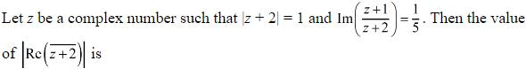
Hint 1: Put w = z + 2, so |w| = 1. Rewrite (z + 1)/(z + 2) in terms of w.
Hint 2: (w − 1)/w = 1 − 1/w = 1 − w̄ since |w| = 1.
What this tests: Complex numbers on the unit circle
1. Im(1 − w̄) = Im(w) = 1/5.
2. Re(w)2 = 1 − 1/25 = 24/25.
3. |Re(z̄ + 2)| = |Re w| = 2√6/5.
Answer: (1)
If this felt hard: Revise 1/w = w̄ when |w| = 1.
Claude’s answer: 1 · NTA final key: 1 · agrees · Answer recomputed with SymPy (tools/verify_pyq_solutions.py)
Q3 · Mathematics · MCQ · ID 68019114336
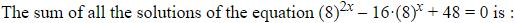
Hint 1: Put t = 8x.
Hint 2: t2 − 16t + 48 = 0, so t = 4 or 12; the product of the t-values is 48.
What this tests: Exponential equations
1. 8x1 × 8x2 = 48, so x1 + x2 = log848.
2. log848 = 1 + log86.
Answer: (4)
If this felt hard: Revise logarithms.
Claude’s answer: 4 · NTA final key: 4 · agrees · Answer recomputed with SymPy (tools/verify_pyq_solutions.py)
Q4 · Mathematics · MCQ · ID 68019114337
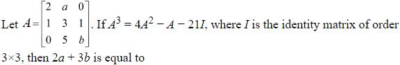
Hint 1: Compare with the Cayley–Hamilton equation A3 − (tr A)A2 + (…)A − (det A)I = 0.
Hint 2: tr A = 4, det A = −21, sum of principal 2 × 2 minors = 1.
What this tests: Cayley–Hamilton theorem
1. tr A = 5 + b = 4, so b = −1.
2. det A = 2(3b − 5) − ab = −16 + a = −21, so a = −5.
3. Check: minors (6 − a) + 2b + (3b − 5) = 11 − 2 − 8 = 1.
4. 2a + 3b = −13.
Answer: (2)
If this felt hard: Revise Matrices.
Claude’s answer: 2 · NTA final key: 2 · agrees · Answer recomputed with SymPy (tools/verify_pyq_solutions.py)
Q5 · Mathematics · MCQ · ID 68019114338
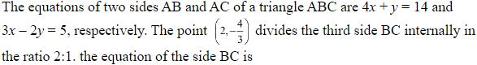
Hint 1: Take B on AB and C on AC as general points and use the section formula.
Hint 2: B = (b, 14 − 4b), C = (c, (3c − 5)/2), and (B + 2C)/3 = (2, −4/3).
What this tests: Section formula and straight lines
1. b + 2c = 6 and −4b + 3c = −13: c = 1, b = 4.
2. B = (4, −2), C = (1, −1).
3. BC: x + 3y + 2 = 0.
Answer: (1)
If this felt hard: Revise Straight Lines.
Claude’s answer: 1 · NTA final key: 1 · agrees · Answer recomputed with SymPy (tools/verify_pyq_solutions.py)
Q6 · Mathematics · MCQ · ID 68019114339
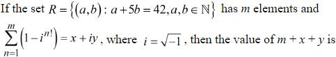
(1) 
(2) 
(3) 
(4) 
Hint 1: Count the natural-number solutions of a + 5b = 42, then look at in!.
Hint 2: n! is a multiple of 4 for n ≥ 4, so those terms are 0.
What this tests: Powers of i
1. b = 1..8: m = 8.
2. n = 1: 1 − i; n = 2: 1 − i2 = 2; n = 3: 1 − i6 = 2; n ≥ 4: 0.
3. Sum = 5 − i: x = 5, y = −1.
4. m + x + y = 12.
Answer: (1)
If this felt hard: Revise Complex Numbers.
Claude’s answer: 1 · NTA final key: 1 · agrees · Answer recomputed by script (tools/verify_pyq_solutions.py)
Q7 · Mathematics · MCQ · ID 68019114340
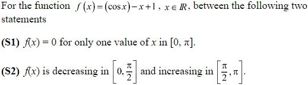
Hint 1: Find f'(x). Can it ever be positive?
Hint 2: f'(x) = −sin x − 1 ≤ 0.
What this tests: Monotonicity and roots
1. f is decreasing everywhere, so S2 is false.
2. f(0) = 2 > 0, f(π) = −π < 0: exactly one root in [0, π]. S1 true.
Answer: (2)
If this felt hard: Revise Application of Derivatives.
Claude’s answer: 2 · NTA final key: 2 · agrees · Answer recomputed with SymPy (tools/verify_pyq_solutions.py)
Q8 · Mathematics · MCQ · ID 68019114341
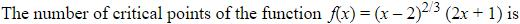
(1) 
(2) 
(3) 
Hint 1: Critical points: f' = 0 or f' does not exist.
Hint 2: f'(x) = 10(x − 1)/(3(x − 2)1/3).
What this tests: Critical points
1. f' = 0 at x = 1.
2. f' does not exist at x = 2.
3. Two critical points.
Answer: (3)
If this felt hard: Revise Application of Derivatives.
Claude’s answer: 3 · NTA final key: 3 · agrees · Answer recomputed with SymPy (tools/verify_pyq_solutions.py)
Q9 · Mathematics · MCQ · ID 68019114342
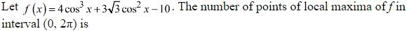
(1) 
(2) 
(3) 
(4) 
Hint 1: Differentiate and factorise in terms of c = cos x.
Hint 2: f' = −6 sin x cos x (2 cos x + √3).
What this tests: Local maxima and minima
1. Stationary points in (0, 2π): π/2, 5π/6, π, 7π/6, 3π/2.
2. Sign checks: maxima at 5π/6 and 7π/6; minima at π/2, π, 3π/2.
3. Two local maxima.
Answer: (2)
If this felt hard: Revise the first derivative test.
Claude’s answer: 2 · NTA final key: 2 · agrees · Answer recomputed with SymPy (tools/verify_pyq_solutions.py)
Q10 · Mathematics · MCQ · ID 68019114343
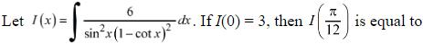
Hint 1: Put t = cot x.
Hint 2: dt = −cosec2x dx; ∫ −6 dt/(1 − t)2 = −6/(1 − t).
What this tests: Integration by substitution
1. I = 6/(cot x − 1) + C; as x → 0 the first term → 0, so C = 3.
2. cot(π/12) = 2 + √3: I = 6/(1 + √3) + 3 = 3√3.
Answer: (2)
If this felt hard: Revise Integrals.
Claude’s answer: 2 · NTA final key: 2 · agrees · Answer recomputed with SymPy (tools/verify_pyq_solutions.py)
Note: Reads I(0) as the limit x → 0^{+}, as intended.
Q11 · Mathematics · MCQ · ID 68019114344
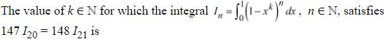
(1) 
(2) 
(4) 
Hint 1: Integrate by parts to relate In and In−1.
Hint 2: In = nk(In−1 − In), so In/In−1 = nk/(1 + nk).
What this tests: Reduction formulae
1. I21/I20 = 21k/(1 + 21k) = 147/148.
2. 21k = 147, k = 7.
Answer: (4)
If this felt hard: Revise integration by parts.
Claude’s answer: 4 · NTA final key: 4 · agrees · Answer recomputed with SymPy (tools/verify_pyq_solutions.py)
Q12 · Mathematics · MCQ · ID 68019114345
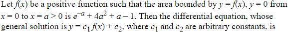
Hint 1: Differentiate the area with respect to a to get f.
Hint 2: f(x) = −e−x + 8x + 1; y = c1f + c2 gives y''/y' = f''/f'.
What this tests: Forming differential equations
1. f' = e−x + 8, f'' = −e−x.
2. y''/y' = −e−x/(e−x + 8) = −1/(1 + 8ex).
3. (8ex + 1)y'' + y' = 0.
Answer: (3)
If this felt hard: Revise Differential Equations.
Claude’s answer: 3 · NTA final key: 3 · agrees · Answer recomputed with SymPy (tools/verify_pyq_solutions.py)
Q13 · Mathematics · MCQ · ID 68019114346
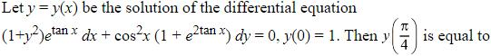
(2)
(3)
Hint 1: Separate the variables; put u = etan x.
Hint 2: etan x sec2x dx/(1 + e2tan x) + dy/(1 + y2) = 0.
What this tests: Variable separable DE
1. tan−1(etan x) + tan−1y = C; at x = 0: π/4 + π/4 = π/2.
2. At π/4: tan−1e + tan−1y = π/2, so y = 1/e.
Answer: (2)
If this felt hard: Revise Differential Equations.
Claude’s answer: 2 · NTA final key: 2 · agrees · Answer recomputed with SymPy (tools/verify_pyq_solutions.py)
Q14 · Mathematics · MCQ · ID 68019114347
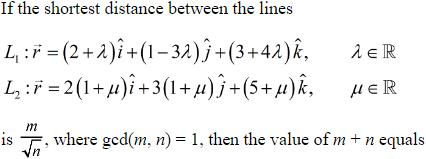
(2) 
Hint 1: SD = |(a2 − a1)·(d1 × d2)|/|d1 × d2|.
Hint 2: a1 = (2, 1, 3), d1 = (1, −3, 4); a2 = (2, 3, 5), d2 = (2, 3, 1).
What this tests: Shortest distance
1. d1 × d2 = (−15, 7, 9), |n|2 = 355.
2. (0, 2, 2)·n = 32.
3. SD = 32/√355: m + n = 387.
Answer: (4)
If this felt hard: Revise Three Dimensional Geometry.
Claude’s answer: 4 · NTA final key: 4 · agrees · Answer recomputed with SymPy (tools/verify_pyq_solutions.py)
Q15 · Mathematics · MCQ · ID 68019114348
(1)
(2) 
(3) 
(4)
Hint 1: Use the section formula to find the centre of C1.
Hint 2: (6, 6) = (C1 + 2C2)/3 with C2 = (8, 15/2).
What this tests: Touching circles
1. C1 = (2, 3).
2. r1 = distance from (2, 3) to (6, 6) = 5; r2 = distance from (6, 6) to (8, 7.5) = 5/2.
3. 5 + 4(25 + 25/4) = 130.
Answer: (3)
If this felt hard: Revise Circles.
Claude’s answer: 3 · NTA final key: 3 · agrees · Answer recomputed with SymPy (tools/verify_pyq_solutions.py)
Q16 · Mathematics · MCQ · ID 68019114349
(1)
(2)
(3)
(4)
Hint 1: This hyperbola opens up and down: the 'transverse' axis is the y-axis.
Hint 2: e2 = 1 + a2/b2; latus rectum 2a2/b; foci (0, ±be).
What this tests: Conjugate-type hyperbola
1. a2 = 2b2 and 4b = 4√3: b2 = 3, a2 = 6.
2. (α, 6): −α2/6 + 12 = 1, α2 = 66.
3. Foci (0, ±3): distances √75 and √147, product 105.
4. α2 + β = 171.
Answer: (3)
If this felt hard: Revise Conic Sections.
Claude’s answer: 3 · NTA final key: 3 · agrees · Answer recomputed with SymPy (tools/verify_pyq_solutions.py)
Q17 · Mathematics · MCQ · ID 68019114350
(1)
(2)
(3)
(4)
Hint 1: Write x, y, z in terms of γ, θ, φ (spherical coordinates).
Hint 2: z = γ cos φ, x = γ sin φ cos θ, y = γ sin φ sin θ.
What this tests: 3D coordinates
1. Distance from x-axis = √(y2 + z2) = γ√(1 − sin2φ cos2θ).
Answer: (1)
If this felt hard: Revise Three Dimensional Geometry.
Claude’s answer: 1 · NTA final key: 1 · agrees · Answer recomputed with SymPy (tools/verify_pyq_solutions.py)
Q18 · Mathematics · MCQ · ID 68019114351
(1)
(2)
(3)
(4)
Hint 1: a·b must be negative for every t: a quadratic in t that is always negative.
Hint 2: a·b = αt2 + 6αt − 12.
What this tests: Sign of a quadratic
1. α = 0 gives −12 < 0: works.
2. α < 0 with discriminant 36α2 + 48α < 0: −4/3 < α < 0.
3. Set: (−4/3, 0].
Answer: (3)
If this felt hard: Revise Quadratic Equations and dot products.
Claude’s answer: 3 · NTA final key: 3 · agrees · Answer recomputed with SymPy (tools/verify_pyq_solutions.py)
Q19 · Mathematics · MCQ · ID 68019114352
(1)
(2) 
(3) 
(4) 
Hint 1: List the ordered pairs (a, 24 − a).
Hint 2: Greatest product 144; need a(24 − a) ≥ 108.
What this tests: Classical probability
1. 23 ordered pairs.
2. a(24 − a) ≥ 108 for 6 ≤ a ≤ 18: 13 pairs.
3. p = 13/23, n − m = 10.
Answer: (4)
If this felt hard: Revise Probability.
Claude’s answer: 4 · NTA final key: 4 · agrees · Answer recomputed by script (tools/verify_pyq_solutions.py)
Note: Uses ordered pairs (unordered would give 7/12, not an option).
Q20 · Mathematics · MCQ · ID 68019114353
(1)
(2)
(3)
(4)
Hint 1: Which quadrant? Then find cos x and tan x.
Hint 2: Third quadrant: cos x = −4/5, tan x = 3/4.
What this tests: Trigonometric ratios
1. 80(9/16 + 4/5) = 45 + 64 = 109.
Answer: (1)
If this felt hard: Revise signs in quadrants.
Claude’s answer: 1 · NTA final key: 1 · agrees · Answer recomputed by script (tools/verify_pyq_solutions.py)
Q21 · Mathematics · Numerical · ID 68019114354
Hint 1: Put s = sin2θ in [0, 1].
Hint 2: f = 1 + 2(1 − s)/(s2 − s + 1).
What this tests: Range of trigonometric expressions; GP
1. (1 − s)/(s2 − s + 1) decreases from 1 to 0 on [0, 1].
2. Range [1, 3]: α/β = 1/3.
3. Sum = 64/(2/3) = 96.
Answer: 96
If this felt hard: Revise Trigonometry and Sequences.
Claude’s answer: 96 · NTA final key: 96 · agrees · Answer recomputed with SymPy (tools/verify_pyq_solutions.py)
Q22 · Mathematics · Numerical · ID 68019114355
Hint 1: Eigenvalues: trace 3 and determinant 3.
Hint 2: λ = √3 e±iπ/6, so tr An = 2 × 3n/2 cos(nπ/6).
What this tests: Powers of matrices
1. tr A13 = 2 × 313/2 cos(13π/6) = 2 × 313/2 × √3/2 = 37.
2. n = 7.
Answer: 7
If this felt hard: Revise Matrices (Cayley–Hamilton recurrence also works).
Claude’s answer: 7 · NTA final key: 7 · agrees · Answer recomputed with SymPy (tools/verify_pyq_solutions.py)
Q23 · Mathematics · Numerical · ID 68019114356
Hint 1: Count all, then remove those with digit sum divisible by 3.
Hint 2: Triples with sum divisible by 3: {2,3,4}, {2,3,7}, {3,4,5}, {3,5,7}.
What this tests: Counting with divisibility
1. Total 5 × 4 × 3 = 60.
2. Divisible by 3: 4 × 6 = 24.
3. 60 − 24 = 36.
Answer: 36
If this felt hard: Revise Permutations.
Claude’s answer: 36 · NTA final key: 36 · agrees · Answer recomputed by script (tools/verify_pyq_solutions.py)
Q24 · Mathematics · Numerical · ID 68019114357
Hint 1: Use ΣC = 2n, ΣrC = n2n−1, Σr2C = n(n + 1)2n−2.
Hint 2: α = 2n(n + 1)2; β = 2n+1/(n + 1).
What this tests: Binomial sums
1. 2α/β = (n + 1)3.
2. 140 < (n + 1)3 < 281 gives (n + 1)3 = 216, n = 5.
Answer: 5
If this felt hard: Revise Binomial Theorem.
Claude’s answer: 5 · NTA final key: 5 · agrees · Answer recomputed with SymPy (tools/verify_pyq_solutions.py)
Q25 · Mathematics · Numerical · ID 68019114358
Hint 1: Row k ends at the number k(k + 1)/2.
Hint 2: 102 × 103/2 = 5253; 103 × 104/2 = 5356.
What this tests: Triangular numbers
1. 5253 < 5310 ≤ 5356.
2. Row 103.
Answer: 103
If this felt hard: Revise Sequences.
Claude’s answer: 103 · NTA final key: 103 · agrees · Answer recomputed by script (tools/verify_pyq_solutions.py)
Q26 · Mathematics · Numerical · ID 68019114359
Hint 1: For small x, (cos kx)1/k ≈ 1 − kx2/2.
Hint 2: 1 − Π(1 − kx2/2) ≈ (x2/2)Σk.
What this tests: Limits by expansion
1. Σ k for k = 1..10 = 55.
2. Limit = 2 × 55/2 = 55.
Answer: 55
If this felt hard: Revise Limits.
Claude’s answer: 55 · NTA final key: 55 · agrees · Answer recomputed with SymPy (tools/verify_pyq_solutions.py)
Q27 · Mathematics · Numerical · ID 68019114360
Hint 1: Find where sin x and cos x cross in [−π, π], then integrate |min|.
Hint 2: They cross at −3π/4 and π/4.
What this tests: Area with min of functions
1. Pieces: cos on [−π, −3π/4], sin on [−3π/4, π/4], cos on [π/4, π].
2. Areas: √2/2, 2, 2 − √2/2. Total A = 4.
3. A2 = 16.
Answer: 16
If this felt hard: Revise Application of Integrals.
Claude’s answer: 16 · NTA final key: 16 · agrees · Answer recomputed with SymPy (tools/verify_pyq_solutions.py)
Q28 · Mathematics · Numerical · ID 68019114361
Hint 1: (r − b − c) × a = 0 means r = b + c + λa.
Hint 2: Use r·(b − c) = 0 to find λ.
What this tests: Vector equations
1. (b + c)·(b − c) = |b|2 − |c|2 = −67, a·(b − c) = −593: λ = −67/593.
2. 593r + 67a = 593(b + c).
3. Answer = |b + c|2 = 400 + 25 + 144 = 569.
Answer: 569
If this felt hard: Revise Vector Algebra.
Claude’s answer: 569 · NTA final key: 569 · agrees · Answer recomputed with SymPy (tools/verify_pyq_solutions.py)
Q29 · Mathematics · Numerical · ID 68019114362
Hint 1: Centroid G divides OH in 1 : 2. Find G, then use the orthocentre conditions.
Hint 2: G = (2O + H)/3 = (0, 0).
What this tests: Orthocentre, centroid, circumcentre
1. The first triangle's orthocentre is (0, 0). Vertex A = (−1, 1) (lines 1 and 2): OA ⊥ line 3, so b = −a.
2. Vertex on lines 1 and 3: B = t(1, 2) (altitude ⊥ line 2): 8t = 1, B = (1/8, 1/4).
3. a(1/8 − 1/4) = 1: a = −8, b = 8.
4. |a − b| = 16.
Answer: 16
If this felt hard: Revise Euler line: G divides OH in 1 : 2.
Claude’s answer: 16 · NTA final key: 16 · agrees · Answer recomputed with SymPy (tools/verify_pyq_solutions.py)
Q30 · Mathematics · Numerical · ID 68019114363
Hint 1: Hypergeometric mean: n × (fraction of that colour).
Hint 2: E[X] = 3 × 5/9, E[Y] = 3 × 4/9.
What this tests: Mean of a random variable
1. 7(5/3) + 4(4/3) = 51/3 = 17.
Answer: 17
If this felt hard: Revise Probability.
Claude’s answer: 17 · NTA final key: 17 · agrees · Answer recomputed by script (tools/verify_pyq_solutions.py)
Q31 · Physics · MCQ · ID 68019114364
(1)
(2)
(3)
(4)
Hint 1: NCERT's rule for order of magnitude: round a × 10b to a power of 10.
Hint 2: If a ≤ 5 the order is b; if a > 5 it is b + 1.
What this tests: Order of magnitude
1. b is the order of magnitude when a ≤ 5.
Answer: (3)
If this felt hard: Revise Units and Measurements.
Claude’s answer: 3 · NTA final key: 3 · agrees · Theory question: not computable, needs a teacher’s review
Note: Follows NCERT's 5 cut-off.
Q32 · Physics · MCQ · ID 68019114365
(1)
(2)
(3)
(4)
Hint 1: In 30 min, how many turns does each hand make?
Hint 2: Second hand: 30 turns; minute hand: half a turn.
What this tests: Circular motion distances
1. Second hand: 30 × 2π × 0.75 = 141.3 m.
2. Minute hand: π × 0.6 = 1.884 m.
3. x ≈ 139.4 m.
Answer: (2)
If this felt hard: Revise Motion in a Plane.
Claude’s answer: 2 · NTA final key: 2 · agrees · Answer recomputed by script (tools/verify_pyq_solutions.py)
Q33 · Physics · MCQ · ID 68019114366
(1)
(2)
(3)
(4) 
Hint 1: Momentum is conserved: equal and opposite momenta.
Hint 2: K = p2/(2m).
What this tests: Explosion and kinetic energy
1. KB/KA = mA/mB = vB/vA.
Answer: (1)
If this felt hard: Revise Laws of Motion.
Claude’s answer: 1 · NTA final key: 1 · agrees · Answer recomputed by script (tools/verify_pyq_solutions.py)
Q34 · Physics · MCQ · ID 68019114367
(1)
(2)
(3)
(4)
Hint 1: F = Δp/Δt.
Hint 2: Δp = 0.15 × 20.
What this tests: Impulse
1. F = 3/0.1 = 30 N.
Answer: (3)
If this felt hard: Revise Laws of Motion.
Claude’s answer: 3 · NTA final key: 3 · agrees · Answer recomputed by script (tools/verify_pyq_solutions.py)
Q35 · Physics · MCQ · ID 68019114368
(1)
(2)
(3)
(4)
Hint 1: Equal KE: p = √(2mK) ∝ √m.
Hint 2: Masses 0.4, 1.2, 1.6 kg.
What this tests: Momentum and KE
1. √0.4 : √1.2 : √1.6 = 1 : √3 : 2.
Answer: (1)
If this felt hard: Revise Work, Energy and Power.
Claude’s answer: 1 · NTA final key: 1 · agrees · Answer recomputed by script (tools/verify_pyq_solutions.py)
Q36 · Physics · MCQ · ID 68019114369
(1)
(2)
(3)
(4)
Hint 1: Every term must be a pressure (energy per volume).
Hint 2: P + ρgh + (1/2)ρv2 = constant.
What this tests: Bernoulli's equation
1. Option 3.
Answer: (3)
If this felt hard: Revise Mechanical Properties of Fluids.
Claude’s answer: 3 · NTA final key: 3 · agrees · Theory question: not computable, needs a teacher’s review
Q37 · Physics · MCQ · ID 68019114370
(1)
(2)
(3)
(4)
Hint 1: a, b are on one isotherm and d, c on the other. Use TVγ−1 = constant along each adiabat.
Hint 2: T1Vaγ−1 = T2Vdγ−1 and T1Vbγ−1 = T2Vcγ−1.
What this tests: Adiabatic and isothermal curves
1. (Va/Vd)γ−1 = T2/T1 = (Vb/Vc)γ−1.
2. Va/Vd = Vb/Vc.
Answer: (1)
If this felt hard: Revise Thermodynamics.
Claude’s answer: 1 · NTA final key: 1 · agrees · Theory question: not computable, needs a teacher’s review
Q38 · Physics · MCQ · ID 68019114371
(1)
(2)
(3)
(4)
Hint 1: Write L in terms of r for a circular orbit around the sun.
Hint 2: L = m√(GMr) and T ∝ r3/2.
What this tests: Kepler's law and angular momentum
1. LA/LB = (m1/m2)√(r1/r2) = 1/3, so √(r1/r2) = m2/(3m1).
2. TA/TB = (r1/r2)3/2 = (1/27)(m2/m1)3.
Answer: (1)
If this felt hard: Revise Gravitation.
Claude’s answer: 1 · NTA final key: 1 · agrees · Theory question: not computable, needs a teacher’s review
Q39 · Physics · MCQ · ID 68019114372
(1)
(2)
(3)
(4)
Hint 1: CV = (f/2)R.
Hint 2: Monatomic f = 3, rigid diatomic f = 5.
What this tests: Specific heats
1. Ratio 3 : 5.
Answer: (2)
If this felt hard: Revise Kinetic Theory.
Claude’s answer: 2 · NTA final key: 2 · agrees · Answer recomputed by script (tools/verify_pyq_solutions.py)
Q40 · Physics · MCQ · ID 68019114373
(1)
(2)
(3)
(4)
Hint 1: The two 4 Ω are in parallel across the cell.
Hint 2: R = 2 Ω; I = E/(R + r).
What this tests: Terminal voltage
1. I = 3/3 = 1 A.
2. V = E − Ir = 2 V.
Answer: (1)
If this felt hard: Revise Current Electricity.
Claude’s answer: 1 · NTA final key: 1 · agrees · Answer recomputed by script (tools/verify_pyq_solutions.py)
Q41 · Physics · MCQ · ID 68019114374
(1)
(2)
(3)
(4)
Hint 1: Paramagnets are weakly attracted. Which way do they move in a non-uniform field?
Hint 2: They move from weak to strong field; χ is small and positive.
What this tests: Paramagnetism
1. A true; B false (weakly); C true; D false.
Answer: (2)
If this felt hard: Revise Magnetism and Matter.
Claude’s answer: 2 · NTA final key: 2 · agrees · Theory question: not computable, needs a teacher’s review
Q42 · Physics · MCQ · ID 68019114375
(1)
(2)
(3)
(4)
Hint 1: Radiation pressure on an absorbing surface: F = IA/c.
Hint 2: I = 360 W/cm2 = 3.6 × 106 W/m2.
What this tests: Radiation pressure
1. A = Fc/I = 2.4 × 10−4 × 3 × 108/3.6 × 106 = 0.02 m2.
Answer: (3)
If this felt hard: Revise Electromagnetic Waves.
Claude’s answer: 3 · NTA final key: 3 · agrees · Answer recomputed by script (tools/verify_pyq_solutions.py)
Note: The 1 h 30 min is not needed.
Q43 · Physics · MCQ · ID 68019114376
(1) 
(2)
(3)
(4)
Hint 1: sin C = n2/n1 for light going from medium 1 to 2.
Hint 2: sin 45° = 1/√2.
What this tests: Critical angle
1. n1 : n2 = √2 : 1.
Answer: (3)
If this felt hard: Revise Ray Optics.
Claude’s answer: 3 · NTA final key: 3 · agrees · Answer recomputed by script (tools/verify_pyq_solutions.py)
Q44 · Physics · MCQ · ID 68019114377
(1)
(2)
(3)
(4)
Hint 1: Same de Broglie wavelength means same momentum.
Hint 2: K = p2/(2m).
What this tests: de Broglie wavelength and KE
1. Equal p, so K ∝ 1/m.
2. Kproton : Kelectron = me : mp = 1 : 1836.
Answer: (1)
If this felt hard: Revise Dual Nature of Radiation and Matter.
Claude’s answer: 1 · NTA final key: 1 · agrees · Answer recomputed by script (tools/verify_pyq_solutions.py)
Q45 · Physics · MCQ · ID 68019114378
(1)
(2)
(3)
(4)
Hint 1: Connected spheres reach the same potential.
Hint 2: kq1/a = kq2/b.
What this tests: Charge sharing
1. q1 : q2 = a : b.
Answer: (1)
If this felt hard: Revise Electrostatic Potential.
Claude’s answer: 1 · NTA final key: 1 · agrees · Answer recomputed by script (tools/verify_pyq_solutions.py)
Q46 · Physics · MCQ · ID 68019114379
(1)
(2)
(3)
(4)
Hint 1: Δm = E/c2.
Hint 2: E = mc2: divide the energy by (3 × 108)2.
What this tests: Mass defect
1. Δm = 18 × 108/9 × 1016 = 2 × 10−8 kg = 20 μg.
Answer: (2)
If this felt hard: Revise Nuclei.
Claude’s answer: 2 · NTA final key: 2 · agrees · Answer recomputed by script (tools/verify_pyq_solutions.py)
Q47 · Physics · MCQ · ID 68019114380
(1) 
(2)
(3)
(4)
Hint 1: Write the OR output and the lower AND output, then AND them.
Hint 2: Upper: A + B̄. Lower: Ā·B.
What this tests: Boolean algebra
1. Y = (A + B̄)(ĀB) = AĀB + ĀBB̄ = 0.
Answer: (1)
If this felt hard: Revise Semiconductor Electronics.
Claude’s answer: 1 · NTA final key: 1 · agrees · Theory question: not computable, needs a teacher’s review
Note: Gate inputs read from the figure.
Q48 · Physics · MCQ · ID 68019114381
(1)
(2)
(3)
(4)
Hint 1: Fractional errors add for a quotient.
Hint 2: ΔY/Y = ΔM/M + Δl/l.
What this tests: Error analysis
1. 5/500 + 0.02/2 = 1% + 1% = 2%.
Answer: (3)
If this felt hard: Revise Units and Measurements.
Claude’s answer: 3 · NTA final key: 3 · agrees · Answer recomputed by script (tools/verify_pyq_solutions.py)
Q49 · Physics · MCQ · ID 68019114382
(1)
(2)
(3)
(4)
Hint 1: Least count = 1 MSD − 1 VSD.
Hint 2: LC = 1 − 0.9 = 0.1 mm.
What this tests: Vernier calliper and density
1. d = 20 + 0.2 = 20.2 mm; r = 1.01 cm.
2. V = (4/3)π(1.01)3 = 4.32 cm3.
3. ρ = 8.635/4.32 = 2.0 g/cm3.
Answer: (1)
If this felt hard: Revise Units and Measurements.
Claude’s answer: 1 · NTA final key: 1 · agrees · Answer recomputed by script (tools/verify_pyq_solutions.py)
Q50 · Physics · MCQ · ID 68019114383
(1)
(2)
(3)
(4) 
Hint 1: At resonance Z = R.
Hint 2: I = V/R.
What this tests: LCR resonance
1. Halving R doubles I.
Answer: (2)
If this felt hard: Revise Alternating Current.
Claude’s answer: 2 · NTA final key: 2 · agrees · Answer recomputed by script (tools/verify_pyq_solutions.py)
Q51 · Physics · Numerical · ID 68019114384
Hint 1: Resolve into x and y components.
Hint 2: OP along x, OQ along y, OR at −45°.
What this tests: Vector addition
1. Rx = A(1 + 1/√2), Ry = A(1 − 1/√2).
2. R2 = A2(3/2 + √2 + 3/2 − √2) = 3A2.
Answer: 3
If this felt hard: Revise Motion in a Plane.
Claude’s answer: 3 · NTA final key: 3 · agrees · Answer recomputed by script (tools/verify_pyq_solutions.py)
Q52 · Physics · Numerical · ID 68019114385
Hint 1: Treat the plate as a full rectangle minus the notch.
Hint 2: Rectangle 3 × 2 (centre (1.5, 1)) minus 1 × 1 square centred at (1.5, 1.5).
What this tests: Centre of mass by subtraction
1. xcm = (6 × 1.5 − 1.5)/5 = 1.5.
2. ycm = (6 × 1 − 1.5)/5 = 0.9.
3. Ratio 15/9: n = 15.
Answer: 15
If this felt hard: Revise System of Particles.
Claude’s answer: 15 · NTA final key: 15 · agrees · Answer recomputed by script (tools/verify_pyq_solutions.py)
Q53 · Physics · Numerical · ID 68019114386
Hint 1: Soap bubble: ΔP = 4T/R.
Hint 2: hρg = 4T/R.
What this tests: Excess pressure
1. R = 4 × 0.28/(0.0004 × 8000 × 10) = 0.035 m.
2. Diameter = 7 cm.
Answer: 7
If this felt hard: Revise Mechanical Properties of Fluids.
Claude’s answer: 7 · NTA final key: 7 · agrees · Answer recomputed by script (tools/verify_pyq_solutions.py)
Q54 · Physics · Numerical · ID 68019114387
Hint 1: Seventh overtone = which harmonic for each pipe?
Hint 2: Closed: (2n + 1)th with n = 7 → 15th. Open: 8th.
What this tests: Organ pipes
1. fclosed = 15v/(4L); fopen = 8v/(2L) = 16v/(4L).
2. Ratio 15/16: a = 16.
Answer: 16
If this felt hard: Revise Waves.
Claude’s answer: 16 · NTA final key: 16 · agrees · Answer recomputed by script (tools/verify_pyq_solutions.py)
Q55 · Physics · Numerical · ID 68019114388
Hint 1: Flux = (E·n̂) × area.
Hint 2: E·n̂ = (4 + 6 + 8)/6.
What this tests: Electric flux
1. E·n̂ = 3.
2. Φ = 3 × 4 = 12 V m.
Answer: 12
If this felt hard: Revise Electric Charges and Fields.
Claude’s answer: 12 · NTA final key: 12 · agrees · Answer recomputed by script (tools/verify_pyq_solutions.py)
Q56 · Physics · Numerical · ID 68019114389
Hint 1: Rt = R0(1 + αt). Find α from the 100 °C reading.
Hint 2: α = 0.2/(10 × 100) = 2 × 10−4 /°C.
What this tests: Temperature dependence of resistance
1. 10.95 = 10(1 + αt): t = 0.095/(2 × 10−4) = 475 °C.
2. T = 748 K.
Answer: 748
If this felt hard: Revise Current Electricity.
Claude’s answer: 748 · NTA final key: 748 · agrees · Answer recomputed by script (tools/verify_pyq_solutions.py)
Q57 · Physics · Numerical · ID 68019114390
Hint 1: Undeflected: eE = evB.
Hint 2: v from KE: v = √(2K/m).
What this tests: Velocity selector
1. v = √(2 × 5 × 1.6 × 10−19/9 × 10−31) = 1.33 × 106 m/s.
2. E = vB = 1.33 × 106 × 3 × 10−6 = 4 N/C.
Answer: 4
If this felt hard: Revise Moving Charges and Magnetism.
Claude’s answer: 4 · NTA final key: 4 · agrees · Answer recomputed by script (tools/verify_pyq_solutions.py)
Q58 · Physics · Numerical · ID 68019114391
Hint 1: At closest approach, KE = PE.
Hint 2: (1/2)mv2 = k(Ze)(2e)/r0.
What this tests: Distance of closest approach
1. PE = 9 × 109 × 160 × (1.6 × 10−19)2/4.5 × 10−14 = 8.19 × 10−13 J.
2. v = √(2 × 8.19 × 10−13/6.72 × 10−27) = 1.56 × 107 m/s = 156 × 105.
Answer: 156
If this felt hard: Revise Atoms.
Claude’s answer: 156 · NTA final key: 156 · agrees · Answer recomputed by script (tools/verify_pyq_solutions.py)
Q59 · Physics · Numerical · ID 68019114392
Hint 1: Second minimum: a sin θ = 2λ.
Hint 2: Angular divergence = 2θ (both sides).
What this tests: Single slit diffraction
1. θ = 2 × 600 × 10−9/0.4 × 10−3 = 3 × 10−3 rad.
2. Divergence 2θ = 6 × 10−3 rad.
Answer: 6
If this felt hard: Revise Wave Optics.
Claude’s answer: 6 · NTA final key: 6 · agrees · Answer recomputed by script (tools/verify_pyq_solutions.py)
Note: Teacher look: 'angular divergence' is read as the full angle 2θ (key 6); the half-angle would be 3.
Q60 · Physics · Numerical · ID 68019114393
Hint 1: Pulled uniformly through its own side length in 1 s. Find v, emf, current.
Hint 2: Side = √(3.6 × 10−3) = 0.06 m; v = 0.06 m/s.
What this tests: Work in electromagnetic induction
1. emf = NBLv = 10 × 0.5 × 0.06 × 0.06 = 0.018 V.
2. W = emf2t/R = 3.24 × 10−6 J ≈ 3 × 10−6 J.
Answer: 3
If this felt hard: Revise Electromagnetic Induction.
Claude’s answer: 3 · NTA final key: 3 · agrees · Answer recomputed by script (tools/verify_pyq_solutions.py)
Note: Exact value 3.24; key 3 (nearest integer).
Q61 · Chemistry · MCQ · ID 68019114394
(1) 
(2)
(3)
(4)
Hint 1: C6H12O6 + 6O2 → 6CO2 + 6H2O.
Hint 2: Moles of glucose = 900/180.
What this tests: Stoichiometry
1. 5 mol glucose needs 30 mol O2.
2. 30 × 32 = 960 g.
Answer: (3)
If this felt hard: Revise Some Basic Concepts of Chemistry.
Claude’s answer: 3 · NTA final key: 3 · agrees · Answer recomputed by script (tools/verify_pyq_solutions.py)
Q62 · Chemistry · MCQ · ID 68019114395
(1)
(2) 
(3) 
(4) 
Hint 1: Count bond pairs and lone pairs.
Hint 2: NH3: 3 + 1; BrF5: 5 + 1; PCl5: 5 + 0; CH4: 4 + 0.
What this tests: VSEPR shapes
1. A-III, B-I, C-IV, D-II.
Answer: (3)
If this felt hard: Revise Chemical Bonding.
Claude’s answer: 3 · NTA final key: 3 · agrees · Theory question: not computable, needs a teacher’s review
Q63 · Chemistry · MCQ · ID 68019114396
(1)
(2)
(3)
(4)
Hint 1: Adding reactions multiplies their K values.
Hint 2: K = K1K2K3.
What this tests: Combining equilibrium constants
1. K = 1 × 2 × 4 = 8.
Answer: (2)
If this felt hard: Revise Equilibrium.
Claude’s answer: 2 · NTA final key: 2 · agrees · Answer recomputed by script (tools/verify_pyq_solutions.py)
Q64 · Chemistry · MCQ · ID 68019114397
(1)
(2)
(3)
(4)
Hint 1: S in S2O32− goes to +2.5 with I2 and to +6 with Br2. What does that say about the halogens?
Hint 2: With I2 sulphur ends at +2.5 (tetrathionate); with Br2 it goes to +6 (sulphate).
What this tests: Thiosulphate with halogens
1. Br2 oxidises thiosulphate further, so Br2 is the stronger oxidant.
Answer: (1)
If this felt hard: Revise Redox Reactions.
Claude’s answer: 1 · NTA final key: 1 · agrees · Theory question: not computable, needs a teacher’s review
Q65 · Chemistry · MCQ · ID 68019114398
(1)
(2)
(3)
(4)
Hint 1: Disproportionation needs at least one higher and one lower oxidation state.
Hint 2: F has no positive oxidation state.
What this tests: Halogen chemistry
1. Cl2, Br2, I2 disproportionate in alkali; F2 cannot.
Answer: (3)
If this felt hard: Revise The p-Block Elements.
Claude’s answer: 3 · NTA final key: 3 · agrees · Theory question: not computable, needs a teacher’s review
Q66 · Chemistry · MCQ · ID 68019114399
(1)
(2)
(3)
(4)
Hint 1: Inert pair effect: ns2 stays unused more down the group.
Hint 2: Down group 13 the ns2 pair is held more tightly, so +1 gets more stable.
What this tests: Inert pair effect
1. +1 becomes more stable Ga < In < Tl; the inert pair effect explains it.
Answer: (1)
If this felt hard: Revise The p-Block Elements.
Claude’s answer: 1 · NTA final key: 1 · agrees · Theory question: not computable, needs a teacher’s review
Q67 · Chemistry · MCQ · ID 68019114400
(1) 
(2) 
(3) 
(4) 
Hint 1: Does N have vacant d orbitals for back-bonding? Does P?
Hint 2: P(CH3)3 is σ-donor and π-acceptor; N(CH3)3 is σ-donor only.
What this tests: Ligand bonding
1. Both can act as ligands: I correct.
2. Their bonding is different: II incorrect.
Answer: (3)
If this felt hard: Revise Coordination Compounds.
Claude’s answer: 3 · NTA final key: 3 · agrees · Theory question: not computable, needs a teacher’s review
Q68 · Chemistry · MCQ · ID 68019114401
(1) 
(2)
(3) 
(4) 
Hint 1: Which property is extreme for each pair within its own group?
Hint 2: Metalloids sit on the staircase line; Cl has the most negative electron gain enthalpy, F the highest electronegativity.
What this tests: Periodic properties
1. Cl, S: most negative electron gain enthalpy (IV).
2. Ge, As: metalloids (III).
3. Fr, Ra: largest (II).
4. F, O: highest electronegativity (I).
Answer: (4)
If this felt hard: Revise Classification of Elements.
Claude’s answer: 4 · NTA final key: 4 · agrees · Theory question: not computable, needs a teacher’s review
Q69 · Chemistry · MCQ · ID 68019114402
(1) 
(2)
(3) 
(4)
Hint 1: Fe3+ first takes electrons from iodide; Fe2+ then gives them to persulphate.
Hint 2: E°(Fe3+/Fe2+) lies between E°(I2/I−) and E°(S2O82−/SO42−).
What this tests: Homogeneous catalysis
1. 2Fe3+ + 2I− → 2Fe2+ + I2 (A).
2. 2Fe2+ + S2O82− → 2Fe3+ + 2SO42− (D).
Answer: (3)
If this felt hard: Revise Chemical Kinetics / d-block.
Claude’s answer: 3 · NTA final key: 3 · agrees · Theory question: not computable, needs a teacher’s review
Q70 · Chemistry · MCQ · ID 68019114403
(1) 
(2) 
(3) 
(4)
Hint 1: 2 Cl− are outside the sphere. Octahedral needs 6 ligands.
Hint 2: [Co(NH3)5Cl]Cl2.
What this tests: Werner's theory
1. n = 5, x = 3.
2. x + n = 8.
Answer: (4)
If this felt hard: Revise Coordination Compounds.
Claude’s answer: 4 · NTA final key: 4 · agrees · Theory question: not computable, needs a teacher’s review
Q71 · Chemistry · MCQ · ID 68019114404
(1) 
(2) 
(3) 
(4) 
Hint 1: Water is weak field (but Co3+ is low spin). Fill t2g for each ion.
Hint 2: Fe2+ t2g4; Co2+ t2g5; Co3+ t2g6; Cu2+ t2g6; Cr2+ t2g3.
What this tests: Crystal field configurations
1. Even: Fe2+, Co3+, Cu2+.
2. Count 3.
Answer: (3)
If this felt hard: Revise CFT.
Claude’s answer: 3 · NTA final key: 3 · agrees · Theory question: not computable, needs a teacher’s review
Note: Co^{3+} gives an even count either way (t_{2g}^{4} or t_{2g}^{6}).
Q72 · Chemistry · MCQ · ID 68019114405
(1) 
(2)
(3) 
(4)
Hint 1: Match each test with its chemistry.
Hint 2: Borax bead: metaborates; charcoal cavity: carbonate reduced to metal; cobalt nitrate: CoO·MO; flame: volatile chloride.
What this tests: Dry tests in salt analysis
1. A-III, B-IV, C-I, D-II.
Answer: (4)
If this felt hard: Revise practical chemistry.
Claude’s answer: 4 · NTA final key: 4 · agrees · Theory question: not computable, needs a teacher’s review
Q73 · Chemistry · MCQ · ID 68019114406
(1)
(2) 
(3) 
(4) 
Hint 1: Recall the colour of each test product.
Hint 2: Fe3+ + [Fe(CN)6]4− → Prussian blue; nitroprusside + S2− → violet; Fe3+ + SCN− → blood red; phosphate + molybdate → yellow.
What this tests: Colours in qualitative analysis
1. Prussian blue (III), sodium nitroprusside complex violet (I), thiocyanate blood red (II), ammonium phosphomolybdate yellow (IV).
Answer: (2)
If this felt hard: Revise practical chemistry.
Claude’s answer: 2 · NTA final key: 2 · agrees · Theory question: not computable, needs a teacher’s review
Q74 · Chemistry · MCQ · ID 68019114407
(1) 
(2) 
(3) 
(4) 
Hint 1: Use the lowest locant set first; alphabetical order only breaks ties.
Hint 2: Compound A: locants {1, 2, 4} beat {1, 3, 4}.
What this tests: IUPAC naming of benzene derivatives
1. A is 1-chloro-2,4-dinitrobenzene: I incorrect.
2. B: 4-ethyl-2-methylaniline is correct.
Answer: (4)
If this felt hard: Revise nomenclature.
Claude’s answer: 4 · NTA final key: 4 · agrees · Theory question: not computable, needs a teacher’s review
Q75 · Chemistry · MCQ · ID 68019114408
(1)
(2)
(3)
(4)
Hint 1: A 2° carbon is bonded to exactly two other carbons.
Hint 2: The compound is 2,4-dimethylpentane.
What this tests: Classification of carbons
1. Only C-3 (CH2) is secondary.
Answer: (4)
If this felt hard: Revise Organic Chemistry: Some Basic Principles.
Claude’s answer: 4 · NTA final key: 4 · agrees · Theory question: not computable, needs a teacher’s review
Q76 · Chemistry · MCQ · ID 68019114409
(1)
(2) 
(3)
(4)
Hint 1: Aromatic: cyclic, planar, fully conjugated, (4n + 2) π electrons. Look carefully at A: is every ring carbon sp2?
Hint 2: A has a CH2–CH2 in one ring (1,2-dihydronaphthalene). C is [10]annulene; D is [14]annulene.
What this tests: Aromaticity and annulenes
1. A: one ring is not fully conjugated, and NTA applies Hückel's rule to the whole molecule, so it is not counted.
2. B (styrene): benzene ring, aromatic.
3. C ([10]annulene): 10 π but non-planar (H–H clash), not aromatic.
4. D ([14]annulene): 14 π, planar enough, aromatic.
Answer: (4)
If this felt hard: Revise Hückel's rule; check every ring atom is sp2.
Claude’s answer: 4 · NTA final key: 4 · agrees · Theory question: not computable, needs a teacher’s review
Note: Teacher look: NTA applies Hückel's rule to the whole molecule, so the dihydronaphthalene (which contains a benzene ring) is not counted; same convention as 2026 08Apr_Shift2 Q64 and 2024 27Jan_Shift1 Q89.
Q77 · Chemistry · MCQ · ID 68019114410
(1)
(2)
(3)
(4)
Hint 1: SN2 is fastest at an unhindered primary carbon.
Hint 2: Count the alkyl groups crowding the carbon that carries Br.
What this tests: SN2 reactivity
1. Bromomethylcyclobutane (primary) reacts fastest.
Answer: (3)
If this felt hard: Revise Haloalkanes.
Claude’s answer: 3 · NTA final key: 3 · agrees · Theory question: not computable, needs a teacher’s review
Q78 · Chemistry · MCQ · ID 68019114411
(1)
(2)
(3)
(4)
Hint 1: Conc. H2SO4 with heat dehydrates; CH3COCl/pyridine acylates OH.
Hint 2: Saytzeff: the more substituted alkene.
What this tests: Dehydration and esterification
1. A = 1-methylcyclohexene.
2. B = 1-methylcyclohexyl acetate.
Answer: (2)
If this felt hard: Revise Alcohols.
Claude’s answer: 2 · NTA final key: 2 · agrees · Theory question: not computable, needs a teacher’s review
Q79 · Chemistry · MCQ · ID 68019114412
(1)
(2)
(3)
(4)
Hint 1: Hell–Volhard–Zelinsky reaction.
Hint 2: Br replaces an α-H.
What this tests: HVZ reaction
1. P = 1-bromocyclopentane-1-carboxylic acid.
Answer: (1)
If this felt hard: Revise Carboxylic Acids.
Claude’s answer: 1 · NTA final key: 1 · agrees · Theory question: not computable, needs a teacher’s review
Q80 · Chemistry · MCQ · ID 68019114413
(1)
(2)
(3)
(4)
Hint 1: Identify the sugar, then check what Br2 water does.
Hint 2: This is D-glucose. Br2 water oxidises only the CHO.
What this tests: Reactions of glucose
1. Br2 water gives gluconic acid (monocarboxylic), not a dicarboxylic acid.
Answer: (2)
If this felt hard: Revise Biomolecules.
Claude’s answer: 2 · NTA final key: 2 · agrees · Theory question: not computable, needs a teacher’s review
Q81 · Chemistry · Numerical · ID 68019114414
Hint 1: The marked distance is from a crest to the next zero: a quarter wavelength.
Hint 2: λ = 4 × 1.5 pm.
What this tests: Wave relation c = fλ
1. λ = 6 pm.
2. f = 3 × 108/6 × 10−12 = 5 × 1019 Hz.
Answer: 5
If this felt hard: Revise Structure of Atom.
Claude’s answer: 5 · NTA final key: 5 · agrees · Answer recomputed by script (tools/verify_pyq_solutions.py)
Note: Figure reading: 1.5 pm = λ/4.
Q82 · Chemistry · Numerical · ID 68019114415
Hint 1: Look for odd electrons, incomplete octets and expanded octets.
Hint 2: Check each central atom: fewer than 8 electrons, more than 8, or an odd number.
What this tests: Octet rule exceptions
1. NO2, ClO2 (odd); BF3, BeF2 (incomplete); H2SO4, PCl5 (expanded).
2. Count 6.
Answer: 6
If this felt hard: Revise Chemical Bonding.
Claude’s answer: 6 · NTA final key: 6 · agrees · Theory question: not computable, needs a teacher’s review
Q83 · Chemistry · Numerical · ID 68019114416
Hint 1: Reversible isothermal work: nRT ln(V2/V1).
Hint 2: V1 = 10 L, V2 = 100 L.
What this tests: Reversible isothermal work
1. W = 0.08206 × 291.15 × ln 10 = 55 L atm.
Answer: 55
If this felt hard: Revise Thermodynamics.
Claude’s answer: 55 · NTA final key: 55 · agrees · Answer recomputed by script (tools/verify_pyq_solutions.py)
Note: Volume at B = 10 + 90 = 100 L (figure).
Q84 · Chemistry · Numerical · ID 68019114417
Hint 1: Find i from ΔTb.
Hint 2: i = 1 + 2α for AB2.
What this tests: van't Hoff factor
1. m = 0.05/0.1 = 0.5; 0.52 = i × 0.52 × 0.5, so i = 2.
2. α = 0.5 = 5 × 10−1.
Answer: 5
If this felt hard: Revise Solutions.
Claude’s answer: 5 · NTA final key: 5 · agrees · Answer recomputed by script (tools/verify_pyq_solutions.py)
Q85 · Chemistry · Numerical · ID 68019114418
Hint 1: Which order has a constant half-life? Which gives a straight [B] vs t line?
Hint 2: First order in A; zero order in B.
What this tests: Order from data
1. Overall order = 1 + 0 = 1.
Answer: 1
If this felt hard: Revise Chemical Kinetics.
Claude’s answer: 1 · NTA final key: 1 · agrees · Theory question: not computable, needs a teacher’s review
Q86 · Chemistry · Numerical · ID 68019114419
Hint 1: Recall NCERT metallic radii for the 3d series.
Hint 2: Cr has the smallest (129 pm) among those listed.
What this tests: d-block radii and magnetism
1. M = Cr; CrO42− has Cr(VI), d0.
2. μ = 0.
Answer: 0
If this felt hard: Revise The d- and f-Block Elements.
Claude’s answer: 0 · NTA final key: 0 · agrees · Theory question: not computable, needs a teacher’s review
Q87 · Chemistry · Numerical · ID 68019114420
Hint 1: Aniline yellow = p-aminoazobenzene.
Hint 2: C12H11N3, M = 197.
What this tests: Diazo coupling
1. 279/93 = 3 mol aniline.
2. 3 × 197 = 591 g.
Answer: 591
If this felt hard: Revise Amines.
Claude’s answer: 591 · NTA final key: 591 · agrees · Answer recomputed by script (tools/verify_pyq_solutions.py)
Q88 · Chemistry · Numerical · ID 68019114421
Hint 1: Count the stereocentres: ring fusion carbons and the substituted carbon.
Hint 2: Optical isomers = 2n if there is no symmetry.
What this tests: Optical isomerism
1. Stereocentres: 4 ring-fusion carbons and the CH3-bearing carbon = 5.
2. 25 = 32.
Answer: 32
If this felt hard: Revise stereochemistry.
Claude’s answer: 32 · NTA final key: 32 · agrees · Theory question: not computable, needs a teacher’s review
Note: Teacher look: count from a small skeletal drawing; Br sits on a ring-fusion carbon.
Q89 · Chemistry · Numerical · ID 68019114422
Hint 1: Side-chain oxidation, then nitration directed by COOH.
Hint 2: B = m-nitrobenzoic acid.
What this tests: Side-chain oxidation and nitration
1. π bonds: 3 (ring) + 1 (C=O) + 1 (N=O) = 5.
Answer: 5
If this felt hard: Revise Hydrocarbons.
Claude’s answer: 5 · NTA final key: 5 · agrees · Theory question: not computable, needs a teacher’s review
Q90 · Chemistry · Numerical · ID 68019114423
Hint 1: Primary amines give sulphonamides with an acidic N–H, soluble in NaOH.
Hint 2: Count only amines with a free –NH2 on an alkyl or aryl carbon.
What this tests: Hinsberg test
1. Aniline, 4-aminodiphenylamine, o-anisidine, propylamine, cyclohexylamine.
2. Count 5 (amides, urea and semicarbazide are not amines).
Answer: 5
If this felt hard: Revise Amines.
Claude’s answer: 5 · NTA final key: 5 · agrees · Theory question: not computable, needs a teacher’s review